Panduan Lengkap
Souvenir Ramah Lingkungan: Panduan Lengkap 2026
Panduan memilih souvenir eco-friendly dari bahan bambu, kain organik, dan daur ulang untuk berbagai jenis acara.
Baca ArtikelTemukan ide produk, strategi pemilihan merchandise, tips seminar kit, dan panduan corporate gift yang relevan untuk event perusahaan.

Panduan memilih souvenir eco-friendly dari bahan bambu, kain organik, dan daur ulang untuk berbagai jenis acara.
Baca Artikel
Mengenal bahan bambu, kayu, kain organik, kertas daur ulang, dan limbah olahan untuk souvenir ramah lingkungan.
Baca Artikel
Pelajari cara memilih souvenir ramah lingkungan yang tepat dengan menentukan anggaran, memastikan bahan berkelanjutan, dan memverifikasi reputasi produsen.
Baca Artikel
Hindari kesalahan umum dalam memilih souvenir ramah lingkungan seperti mempercayai label tanpa verifikasi, mengabaikan fungsi, dan memilih kemasan berlebihan.
Baca Artikel
Ketahui cara memilih hadiah bisnis bernilai tinggi dengan kualitas, relevansi, dan kemasan yang mampu memperkuat hubungan serta citra merek Anda secara positif.
Baca Artikel
Manfaat corporate gift premium mencakup penguatan loyalitas klien, peningkatan semangat kerja karyawan, dan penguatan citra profesional perusahaan.
Baca Artikel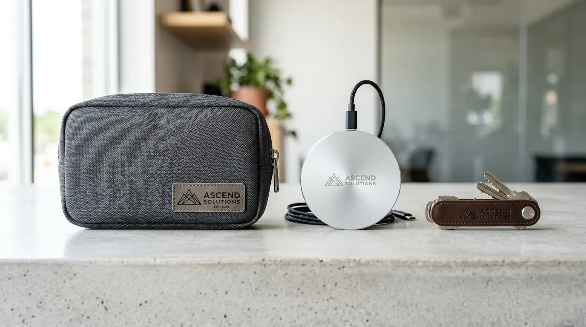
Memilih vendor corporate gift premium yang terpercaya memerlukan evaluasi terhadap kualitas produk, portofolio, dan ketepatan waktu pengiriman.
Baca Artikel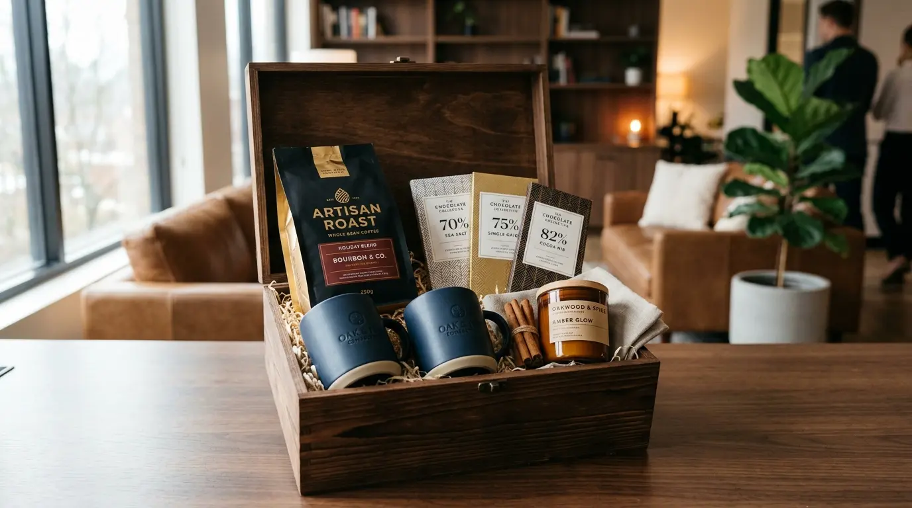
Ide corporate gift premium dapat disesuaikan dengan momen bisnis seperti akhir tahun, penyambutan klien baru, dan penghargaan karyawan.
Baca Artikel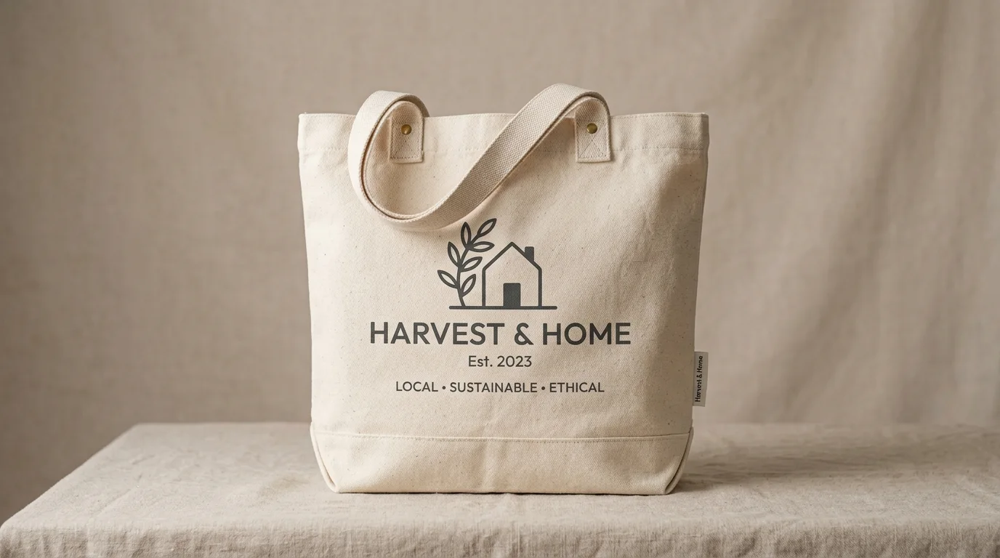
Panduan lengkap tas kanvas custom mulai dari jenis bahan, teknik sablon, hingga hal-hal yang perlu disepakati sebelum memesan.
Baca Artikel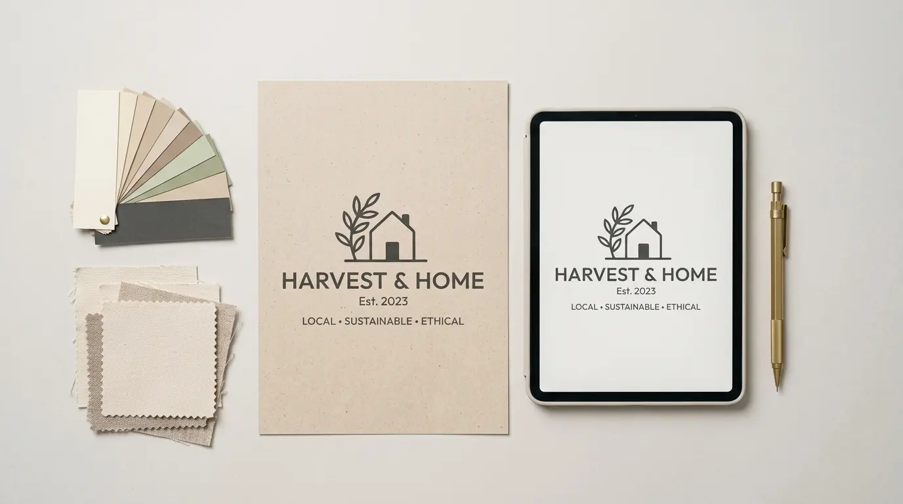
Perbedaan kanvas biasa, marissa, blacu, dan twill untuk tas custom dari sisi tekstur, ketebalan, dan fungsi terbaiknya.
Baca Artikel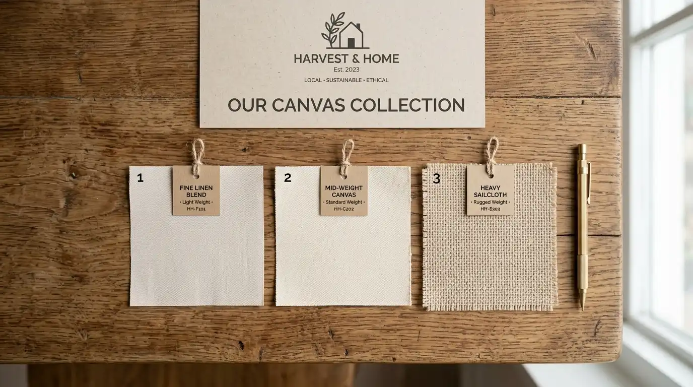
Panduan menghitung estimasi biaya tas kanvas custom berdasarkan jumlah pesanan, bahan, teknik cetak, dan kerumitan desain.
Baca Artikel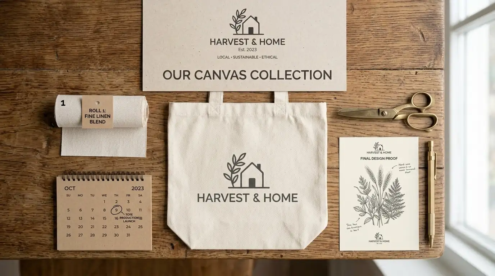
Cara menilai portofolio, kejelasan harga, testimoni, dan menyepakati waktu produksi sebelum memilih vendor tas kanvas custom.
Baca ArtikelTujuh pilihan corporate gift akhir tahun yang lebih berkesan bagi klien, dari planner custom hingga sentuhan personal dari tim.
Baca Artikel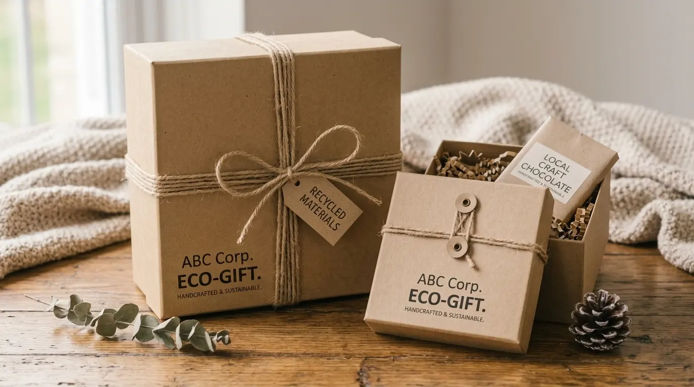
Standar hampers korporat terus naik — dari kemasan ramah lingkungan, wellness, hingga personalisasi yang makin sulit diabaikan.
Baca Artikel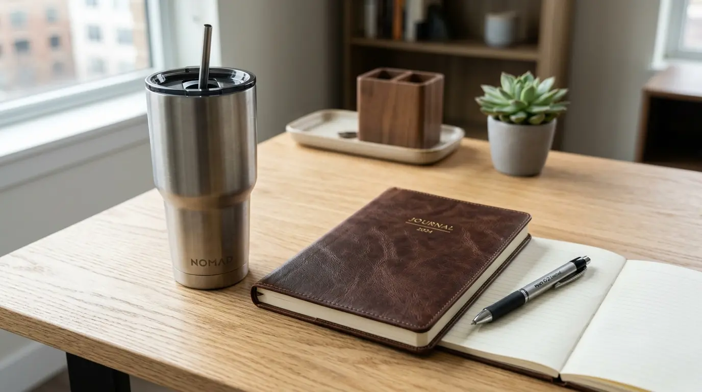
Panduan menentukan budget souvenir kantor yang realistis — dari tujuan, hitungan per penerima, hingga biaya tambahan yang sering terlupakan.
Baca Artikel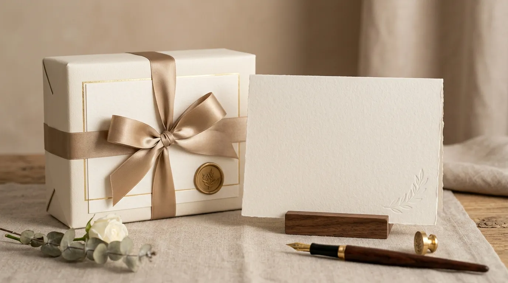
Lima kesalahan yang sering terjadi saat memberi corporate gift ke klien — dari barang generik hingga lupa sentuhan personal.
Baca Artikel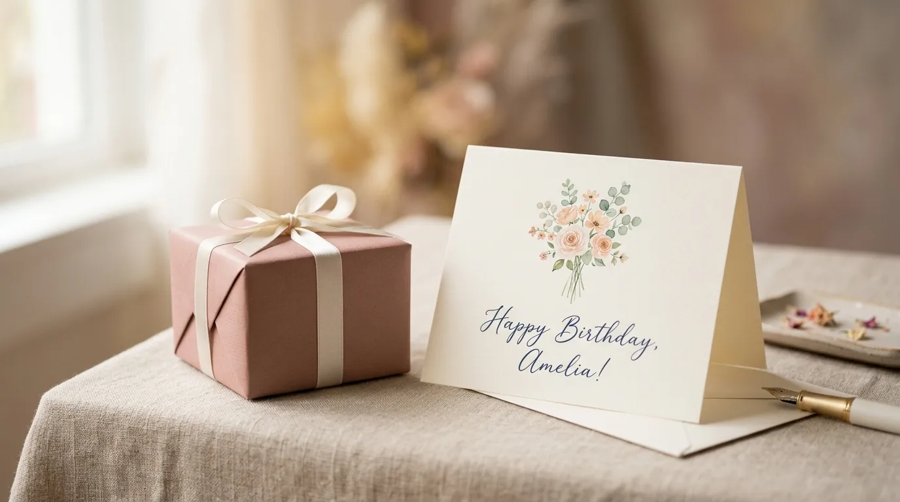
Pilihan kado ulang tahun rekan kerja yang personal tanpa budget berlebihan — dari barang meja kerja hingga hadiah self-reward.
Baca Artikel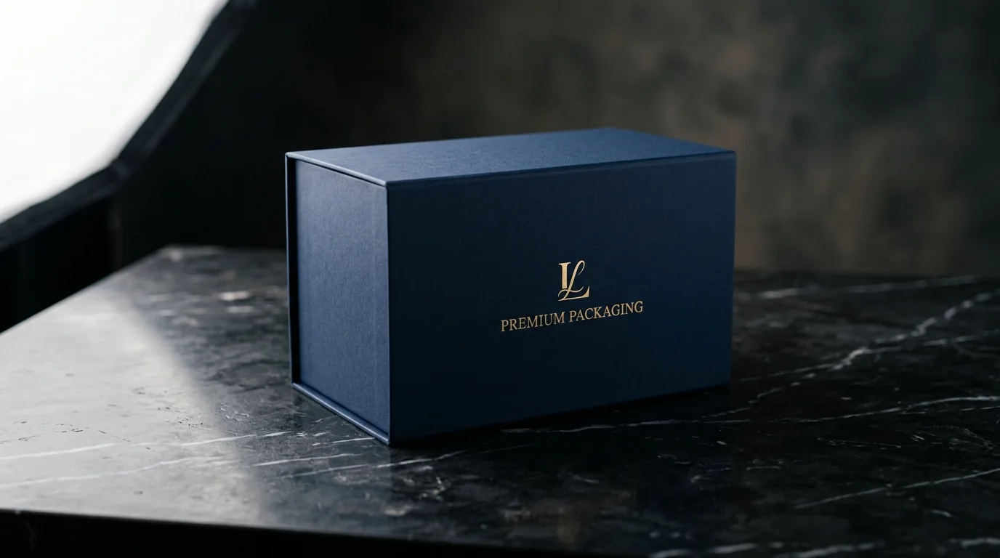
Dari kotak rigid berwarna brand sampai kemasan kayu eksklusif, lima pilihan kemasan ini bikin souvenir kantor terasa lebih niat.
Baca Artikel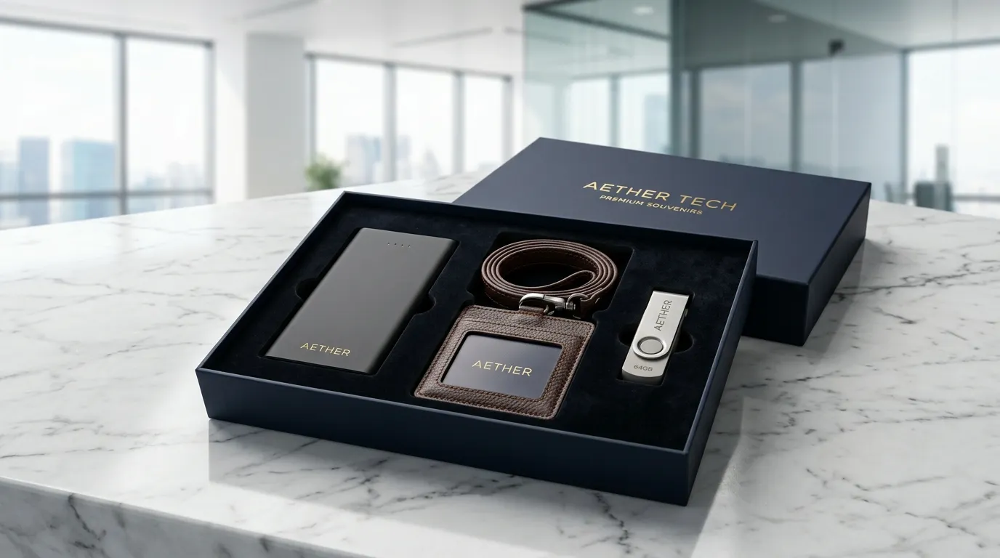
Ketahui tanda vendor souvenir kantor yang bisa diandalkan sebelum order — dari portofolio jelas hingga timeline yang masuk akal.
Baca Artikel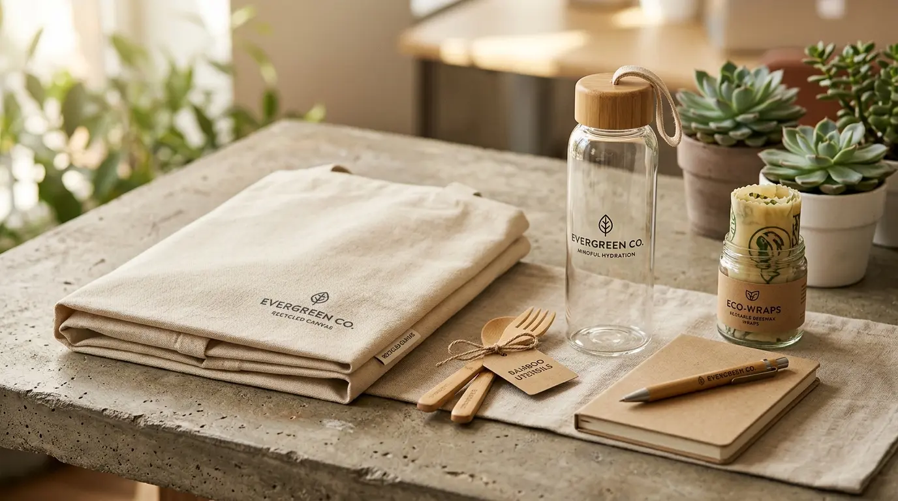
Mengapa harga bukan penentu utama souvenir berkesan? Relevansi dan personalisasi sering kali mengalahkan barang mewah tanpa makna.
Baca ArtikelTim CorporateGifts ID akan bantu memilih item, teknik branding, dan estimasi produksi yang sesuai dengan kebutuhan event Anda.